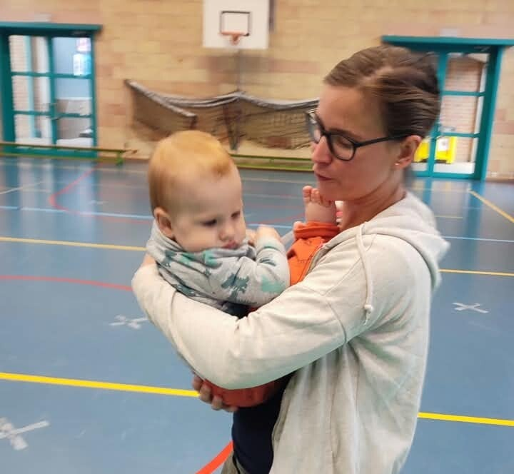
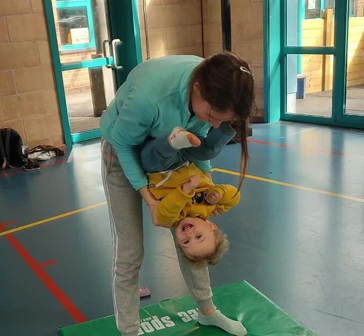
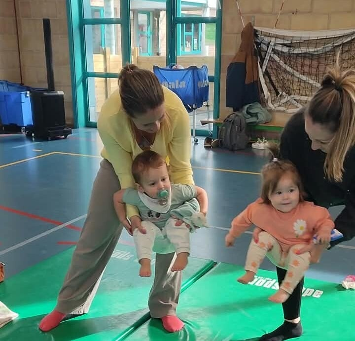

Knuffel & Ontmoet
Samen ontdekken, spelen en elkaar écht ontmoeten
Voor ouders en hun kindje van 10 tot 22 maanden
“Een moment om je kleintje écht te ontmoeten, samen te ontdekken en te verbinden, terwijl ook jij andere ouders ontmoet en even mag genieten van samen onderweg zijn.”
Een warme, kleinschalige workshop voor jonge ouders en hun kindje, waarin ontdekken, bewegen, spelen, nabijheid en verbinding centraal staan.
Wil je graag bewust tijd maken om samen met je kindje te spelen, te bewegen en te genieten? In deze bijzondere eerste jaren ontdekt je kindje elke dag opnieuw de wereld, en jij ontdekt ondertussen samen met hem of haar wat er allemaal groeit, verandert en ontstaat.
Tijdens Knuffel & Ont-moet creëren we een warme en kleinschalige omgeving waarin jij en je kindje samen kunnen ontdekken. Je kindje krijgt de ruimte om te voelen, te bewegen, te experimenteren en nieuwe dingen uit te proberen, terwijl jij steeds dichtbij blijft als vertrouwde basis.
We nemen bewust de tijd om samen te zijn, zonder haast en zonder dat er iets moet. Zo ontstaat er ruimte om elkaar te observeren, op elkaar af te stemmen en vooral te genieten van die kleine momenten die zo waardevol zijn.



Wat mag je verwachten?
Voor ouders en kindjes vanaf 10 tot 22 maand
Tijdens Knuffel & Ontmoet gaan we samen spelen en bewegen op een manier die past bij jonge kindjes. We gebruiken eenvoudige bewegingsspelletjes, liedjes, rijmpjes en fijn speelmateriaal waarmee jullie samen op ontdekking gaan.
Voor de allerkleinsten voorzien we gevarieerd sensorisch spelmateriaal. Verschillende materialen, texturen en bewegingservaringen nodigen je kindje uit om met de zintuigen te ontdekken, te experimenteren en nieuwsgierig te zijn naar wat er rondom hem of haar gebeurt.
Daarnaast maken we tijd voor beweging en samenspel. Misschien wiegen of bewegen jullie samen op een liedje, spelen jullie een eenvoudig spelletje of ontdekken jullie samen een nieuw materiaal. Door dit soort kleine ontmoetingen leert je kindje steeds meer over het eigen lichaam en de wereld, terwijl jullie ook op een natuurlijke manier contact maken met elkaar.
De activiteiten zijn speels en eenvoudig. Je hoeft niets voor te bereiden en je kindje hoeft niets te kunnen. We volgen het tempo van de groep en van ieder kindje.
Een warm moment samen
In deze eerste levensjaren ontstaat er zoveel. Je kindje leert de wereld kennen, ontdekt het eigen lichaam en bouwt stap voor stap vertrouwen op. Jouw nabijheid speelt daarin een belangrijke rol.
Bij Knuffel & Ontmoet krijg je de kans om even bewust stil te staan bij jullie samenzijn. Door samen te bewegen, te spelen, te lachen en te ontdekken, kunnen er kleine momenten van verbinding ontstaan waarin je elkaar op een andere manier ontmoet.
Misschien zie je je kindje helemaal opgaan in een nieuw spelletje. Misschien ontdek je hoe leuk het is om samen te bewegen of merk je dat je kindje telkens opnieuw naar jou terugkomt wanneer iets spannend wordt. Het zijn juist die kleine momenten die jullie band kunnen verdiepen.
En ook jij als ouder mag hier even ont-moeten.
Je hoeft niet alleen bezig te zijn met wat je kindje nodig heeft. Er mag ook gewoon tijd zijn om te genieten, even op adem te komen en andere jonge ouders te ontmoeten die zich in een gelijkaardige fase bevinden.
Na het spelen en bewegen ronden we samen rustig af met een tas koffie of thee. Er is ruimte voor een babbeltje, om ervaringen uit te wisselen of gewoon nog even gezellig samen te zijn.
Een warm moment waarin jij en je kindje elkaar mogen ontmoeten, samen kunnen spelen en bewegen, en waarin ook jij als ouder even mag landen.
Praktisch overzicht
We gaan samen aan de slag met maximum 6 duo’s ouder & kind, zodat er voldoende ruimte en aandacht is voor ieder ouder-kindduo.
| Leeftijd | Voor ouders en kindjes van 10 tot 22 maanden (ongeveer 1 jaar) |
| Duur | Ongeveer 1,5 uur (inclusief rustig afronden met koffie en thee) |
| Locatie | Dilbeek |
| Prijs | € 25,00 per duo (ouder en kind) |